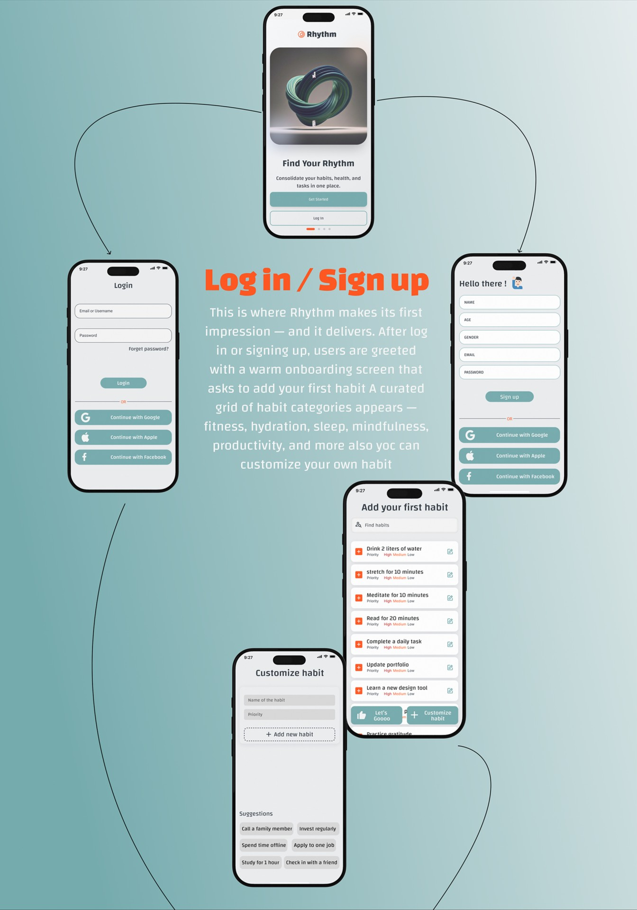
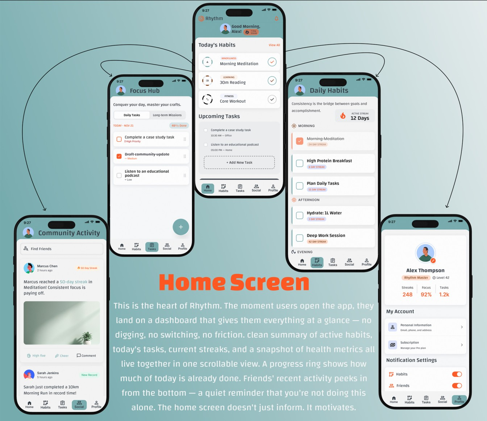
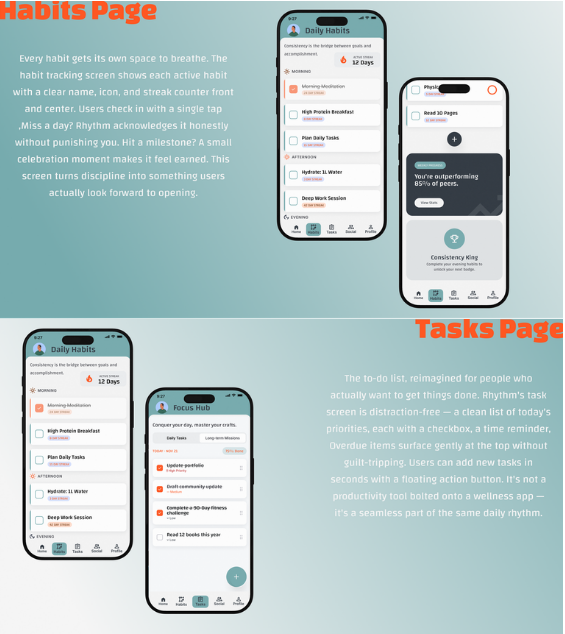
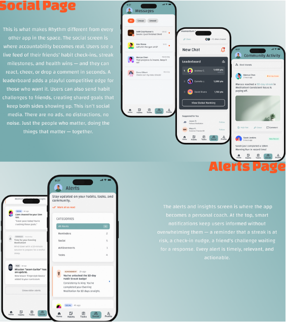
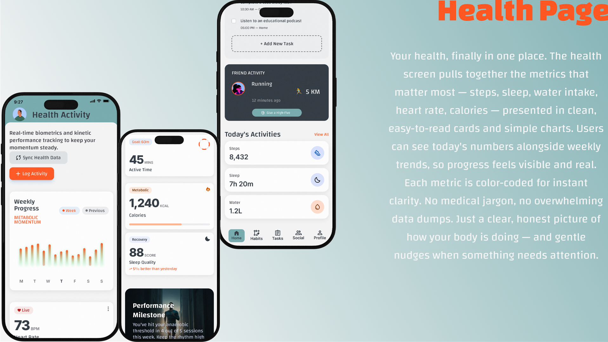
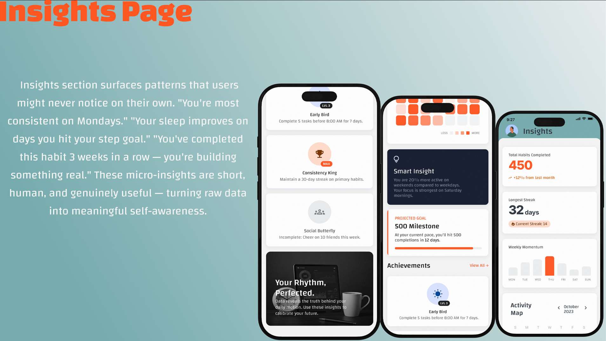

A social habit-tracking and wellness app that brings together daily routines, health monitoring, task management, and peer motivation — all in one unified experience designed for people who want to actually show up every day.
Rhythm is a unified platform where users can track habits, monitor health, manage daily tasks, and stay motivated — together with friends. Instead of switching between four different apps, users get one streamlined experience that keeps everything connected.
A built-in social layer lets friends share progress, celebrate wins, and hold each other accountable — turning a lonely solo routine into a shared journey worth showing up for.
Every streak celebrated. Every milestone earned. Gentle nudges keep you from breaking the chain.
Cheer on friends, share wins, and stay accountable together — no ads, no noise, just the people who matter.
Habits, health, and tasks in one glance — no more switching between four different apps.
Rhythm's identity is built on warmth and clarity — a modern teal paired with an energetic orange accent that celebrates progress. The Changa typeface brings a friendly, human tone that makes wellness feel approachable, not clinical. Every design decision reinforces one idea: consistency, made simple.
A deep-dive survey with 50 active habit-tracking users revealed a broken market — fragmented tools, disengaged users, and unmet needs. Every design decision in Rhythm is grounded in what those users actually asked for.
Users aren't quitting habits because they lack willpower — they're quitting because switching between four apps kills momentum. Rhythm consolidates everything into one.
The market isn't just open — it's actively asking. Rhythm meets a validated demand with a solution users have already imagined.
Users don't want more data — they want each other. Rhythm's social layer turns solo tracking into shared momentum that keeps people coming back.
A complete map of every path through Rhythm — from opening the app to adding habits, logging progress, unlocking milestones, and sharing wins with the community.
From onboarding to daily dashboard, habits, tasks, social feed, health metrics, and personal insights — every screen is designed to feel effortless.

A warm welcome flow that gets users tracking their first habit in under 60 seconds. Curated categories, quick priority selection, and instant customization.

Everything at a glance — active habits, today's tasks, current streaks, and friends' activity. A progress ring shows how much of today is already done.

The to-do list, reimagined. Priority tags, gentle overdue surfacing, and long-term missions — all distraction-free and seamlessly integrated.

Live feed of friends' check-ins, streak milestones, and health wins. React, cheer, or drop a comment — no ads, just the people who matter.

Steps, sleep, heart rate, calories, and recovery — all in one place. Color-coded metrics, weekly trends, and gentle nudges when something needs attention.

Smart patterns you'd never notice on your own. Milestone projections, activity heatmaps, and earned achievements that make consistency feel rewarding.
Reusable UI components designed for the Rhythm experience — clean, friendly, and optimized for quick daily interactions.
Rhythm's core palette blends grounded slate with a fresh teal and an energetic orange — approachable, modern, and instantly recognizable.
Status colors for success and error states, plus neutrals for structure and hierarchy.
| Style | Sample | Specs |
|---|---|---|
| Large Display | Good Morning, Alex! | 35px · Bold |
| Display | Find Your Rhythm | 32px · Bold |
| Title 1 | Today's Habits | 25px · Medium |
| Title 2 | Morning Meditation | 22px · Regular |
| Title 3 | Weekly Progress | 20px · Regular |
| Button | Let's Gooo | 16px · Regular |
| Small | 12 Day Streak | 12px · Regular |
Rhythm turns fragmented daily rituals into one connected, motivating experience. By combining habits, health, tasks, and social accountability, it gives users a reason to show up every single day — and the tools to actually stay consistent.